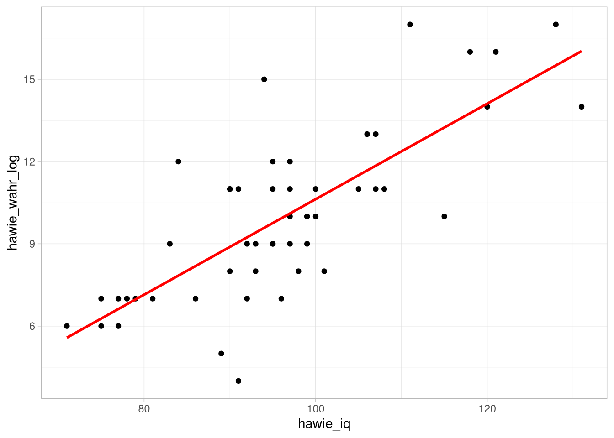
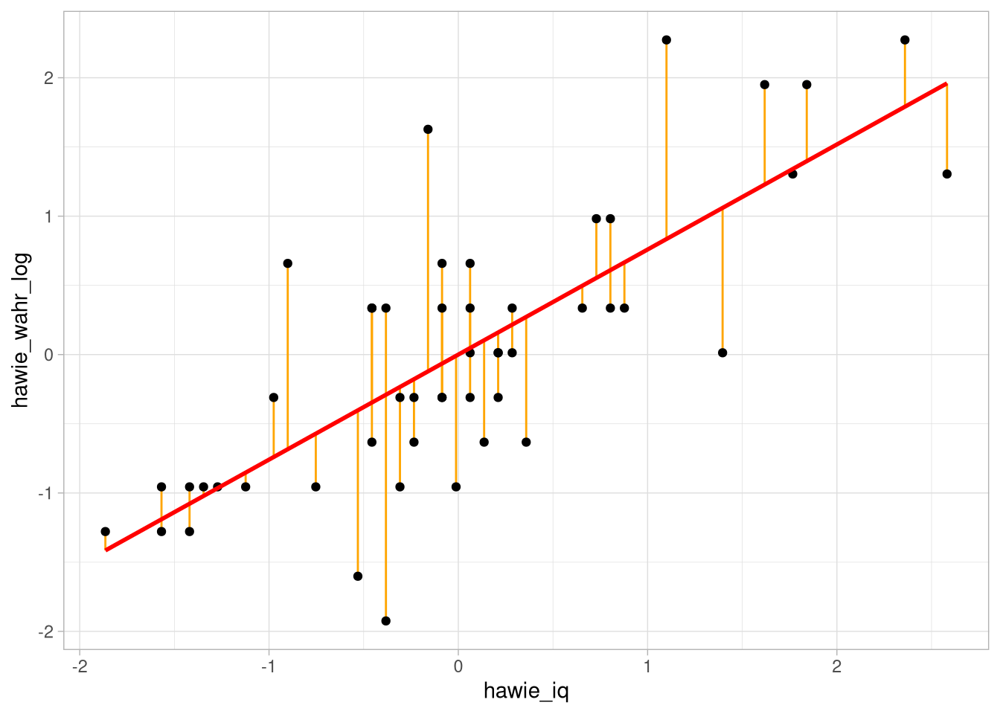

Einfache lineare Zusammenhänge
Datensatz
Für die Tests auf linearen Zusammenhänge werden wir den Datensatz df_wide mit den folgenden Variablen benutzen:
| Variable | Inhalt |
|---|---|
group
|
Treatment-Gruppe |
pre_skill
|
motorischer Skill vor dem Treatment |
post_skill
|
motorischer Skill nach dem Treatment |
hawie_iq
|
Intelligenz-Quotient aus HAWIE |
hawie_wahr_log
|
Skalenwert Wahrnehmungsgebundenes logisches Denken aus HAWIE |
Test auf Korrelation
Test-Hintergrund
Die empirische Korrelation zweier gemeinsam normalverteilter Variablen lässt sich daraufhin testen, ob sie mit der \(H_0\) ‘kein linearer Zusammenhang’ (\(\text{H}_{0}:\rho_{X,Y} = 0\)) verträglich ist.
Dabei wird genutzt, dass bei Multinormalverteilung und Unkorreliertheit der Variablen \(X\) und \(Y\) die Teststatistik \(t_r = r_{x,y} \sqrt{{n-2}\over{1-r_{x,y}}^2}\) \(t-\)verteilt ist, mit \(n-2\) Freiheitsgraden.
Man testet also die Teststatistik \(t\) gegen die \(t_{n-2}\) -Verteilung.
Ist der Test signifikant, wird die \(H_1\) angenommen, also dass die ‘wahre’ Korrelation zwischen \(X\) und \(Y\) ungleich 0 ist.
Gerichtete Hypothesen lassen sich analog testen.
Test auf Korrelation in R
Man kann den Test in R mit Vektoren als Eingabe…
cor.test(df_wide$hawie_iq, df_wide$hawie_wahr_log)##
## Pearson's product-moment correlation
##
## data: df_wide$hawie_iq and df_wide$hawie_wahr_log
## t = 8.0781, df = 48, p-value = 1.678e-10
## alternative hypothesis: true correlation is not equal to 0
## 95 percent confidence interval:
## 0.6094958 0.8564580
## sample estimates:
## cor
## 0.7590665… und mit Modellformel als Eingabe aufrufen.
cor.test(~ hawie_iq + hawie_wahr_log, data = df_wide)##
## Pearson's product-moment correlation
##
## data: hawie_iq and hawie_wahr_log
## t = 8.0781, df = 48, p-value = 1.678e-10
## alternative hypothesis: true correlation is not equal to 0
## 95 percent confidence interval:
## 0.6094958 0.8564580
## sample estimates:
## cor
## 0.7590665Das alternative-Argument bietet die Möglichkeit, die Richtung des Signifikanztests anzugeben.
Dabei steht 'greater' für einen rechtsseitigen, 'lesser' für einen linksseitigen und der Standard 'two.sided' für einen zweiseitigen Test.
cor.test(~ hawie_iq + hawie_wahr_log,
data = df_wide,
alternative='greater') ##
## Pearson's product-moment correlation
##
## data: hawie_iq and hawie_wahr_log
## t = 8.0781, df = 48, p-value = 8.392e-11
## alternative hypothesis: true correlation is greater than 0
## 95 percent confidence interval:
## 0.6375781 1.0000000
## sample estimates:
## cor
## 0.7590665Der Output lässt sich noch ein bisschen schicker mit der tidy-Funktion aus dem broom-Paket darstellen (ist auch im tidyverse enthalten):
cor.test(~ hawie_iq + hawie_wahr_log,
data = df_wide,
alternative='greater') %>%
broom::tidy()## # A tibble: 1 × 8
## estimate statistic p.value parameter conf.low
## <dbl> <dbl> <dbl> <int> <dbl>
## 1 0.759 8.08 8.39e-11 48 0.638
## conf.high method
## <dbl> <chr>
## 1 1 Pearson's product-moment correlation
## alternative
## <chr>
## 1 greaterAufgabe
Wie kann ich das Ergebnis interpretieren?
cor.test(~ hawie_iq + hawie_wahr_log,
data = df_wide,
alternative='greater') %>%
broom::tidy()## # A tibble: 1 × 8
## estimate statistic p.value parameter conf.low
## <dbl> <dbl> <dbl> <int> <dbl>
## 1 0.759 8.08 8.39e-11 48 0.638
## conf.high method
## <dbl> <chr>
## 1 1 Pearson's product-moment correlation
## alternative
## <chr>
## 1 greater- A: Die Logik-Leitung beeinflusst den IQ signifikant positiv.
- B: Es gibt keine Korrelation zwischen Logik-Leistung und IQ.
- C: Die Logik-Leistung und der IQ sind signifikant von Null unterschiedlich korreliert.
- D: Es gibt einen signifikanten, positiv linearen Zusammenhang zwischen Logik-Leistung und IQ.
Lösung
C und D könnte man so sagen, D hat aber natürlich mehr Informationsgehalt.Einfache lineare Regression
Modellanpassung
Bei der einfachen linearen Regression werden anhand der paarweise vorhandenen Daten zweier Variablen X und Y die Parameter a und b der Vorhersagegleichung \(\hat{Y} = bX + a\) so bestimmt, dass die Werte von \(Y\) (dem Kriterium) bestmöglich mit der Vorhersage \(\hat{Y}\) aus den Werten von \(X\) (dem Prädiktor) übereinstimmen.
Als Maß für die Güte der Vorhersage wird die Summe der quadrierten Residuen \(E = Y - \hat{Y}\) , also der Abweichungen von vorhergesagten und Kriteriumswerten herangezogen.
Lineare Modelle wie das der Regression lassen sich mit lm() anpassen und so die Parameter a und b schätzen.
lm(formula= <Modellformel> , data=<Datensatz>)Ein von lm() zurückgegebenes Objekt stellt ein deskriptives Modell der Daten dar, das in anderen Funktionen weiter verwendet werden kann.
Beispiel für deskriptive Modellanpassung
Als Beispiel soll die Leistung auf der Skala zum wahrnehmungsgebundenen logischen Denken als Kriterium mit dem IQ als Prädiktor vorhergesagt werden.
(fitI <- lm(hawie_wahr_log ~ hawie_iq, data = df_wide)) ##
## Call:
## lm(formula = hawie_wahr_log ~ hawie_iq, data = df_wide)
##
## Coefficients:
## (Intercept) hawie_iq
## -6.7909 0.1742ggplot(df_wide, aes(x = hawie_iq, y = hawie_wahr_log)) +
geom_point() +
geom_smooth(formula = y ~ x ,
method = 'lm',col ='red',se = F)
\(\beta\)-Gewicht
Will man statt des \(b\)-Gewichtes das standardisierte \(\beta\)-Gewicht angeben, muss in der Modellformel z-transformiert werden.
Dafür könenn wir entweder alle Teile der formula scalen:
(fitZ <- lm(scale(hawie_wahr_log) ~ scale(hawie_iq),
data = df_wide))##
## Call:
## lm(formula = scale(hawie_wahr_log) ~ scale(hawie_iq), data = df_wide)
##
## Coefficients:
## (Intercept) scale(hawie_iq)
## -4.971e-16 7.591e-01Oder wir benutzen die Index-pipe %$% aus dem magrittr-Paket und ein zwischengeschaltetes mutate, um die Skalierung ein bisschen übersichtlicher zu gestalten:
library(magrittr)
fitZ <- df_wide %>%
mutate(hawie_wahr_log = scale(hawie_wahr_log),
hawie_iq = scale(hawie_iq)) %$%
lm(hawie_wahr_log ~ hawie_iq)
fitZ##
## Call:
## lm(formula = hawie_wahr_log ~ hawie_iq)
##
## Coefficients:
## (Intercept) hawie_iq
## -4.971e-16 7.591e-01df_wide %>%
mutate(hawie_wahr_log = scale(hawie_wahr_log),
hawie_iq = scale(hawie_iq)) %>%
ggplot(aes(x = scale(hawie_iq),
y = scale(hawie_wahr_log))) +
geom_point() +
geom_smooth(formula = y ~ x ,
method = 'lm',col ='red',se = F)weitere Parameter
lm() gibt eine Liste zurück, die ein deskriptives Modell der Daten darstellt.
R bietet weitere Funktionen um einzelne Parameter dieses Outputs auszulesen.
Zum Beispiel:
residuals() zum Anzeigen der Residuen, coef() zur Ausgabe der geschätzten Modellparameter und fitted() für die vorhergesagten Werte.
residuals(fitZ)## 1 2 3 4
## -0.132244120 0.553125355 -0.286404915 0.288579211
## 5 6 7 8
## 1.748985446 -0.244745860 -0.946823542 0.371897320
## 9 10 11 12
## 0.611492617 -0.075993249 -0.036450587 -0.357247601
## 13 14 15 16
## -0.034334195 -0.736411877 1.438547463 -0.469749341
## 17 18 19 20
## -0.146835935 0.682335303 -0.244745860 -0.905164488
## 21 22 23 24
## -1.634309409 -0.330180362 -0.200970413 -0.161427751
## 25 26 27 28
## 0.121942993 0.723994358 -0.721820061 0.682335303
## 29 30 31 32
## -0.146835935 0.136534808 0.721877965 -0.088468673
## 33 34 35 36
## -0.455157526 0.430264583 -1.198894262 -0.655210160
## 37 38 39 40
## -0.203086806 -0.103060488 0.234444733 -0.273929492
## 41 42 43 44
## 0.119826600 0.401080952 -0.384314840 0.065692122
## 45 46 47 48
## 1.342753931 -1.046849860 0.626084433 0.009441252
## 49 50
## 0.482282669 0.428148191
## attr(,"scaled:center")
## [1] 9.96
## attr(,"scaled:scale")
## [1] 3.096805Im broom-Paket gibt es außerdem die augment-Funktion, die uns den zum Fitten genutzten Datensatz mit einer Reihe von Zusatzinfos ausgibt.
broom::augment(fitZ)## # A tibble: 50 × 8
## hawie_wahr_log[,1] hawie_iq[,1] .fitted .resid
## <dbl> <dbl> <dbl> <dbl>
## 1 -0.310 -0.234 -0.178 -0.132
## 2 1.95 1.84 1.40 0.553
## 3 -0.633 -0.456 -0.347 -0.286
## 4 0.336 0.0622 0.0473 0.289
## 5 1.63 -0.160 -0.122 1.75
## 6 -0.310 -0.0860 -0.0653 -0.245
## 7 -0.956 -0.0119 -0.00900 -0.947
## 8 0.982 0.803 0.610 0.372
## 9 0.659 0.0622 0.0473 0.611
## 10 -0.310 -0.308 -0.234 -0.0760
## .hat .sigma .cooksd .std.resid
## <dbl> <dbl> <dbl> <dbl>
## 1 0.0211 0.664 0.000445 -0.203
## 2 0.0892 0.659 0.0380 0.881
## 3 0.0243 0.663 0.00241 -0.441
## 4 0.0201 0.663 0.00201 0.443
## 5 0.0205 0.613 0.0756 2.69
## 6 0.0202 0.664 0.00145 -0.376
## 7 0.0200 0.650 0.0216 -1.45
## 8 0.0332 0.662 0.00567 0.575
## 9 0.0201 0.659 0.00904 0.939
## 10 0.0219 0.665 0.000153 -0.117
## # … with 40 more rowsfitZ %>%
broom::augment() %>%
ggplot(aes(x = hawie_iq,
y = hawie_wahr_log))+
geom_linerange(aes(ymin = .fitted, ymax = hawie_wahr_log), col = 'orange') +
geom_point() +
geom_smooth(formula = y ~ x ,
method = 'lm',col ='red',se = F)
Regressionsanalyse
Test-Hintergrund
Unter Voraussetzungen von Varianzhomogenität und Normalverteilung der \(Y\)-Werte für jeden möglichen Wert von \(X\) können Regressionskoeffizienten ähnlich wie Korrelationskoeffizienten auf Unterschiedlichkeit von 0 getestet werden.
Dazu wird genutzt, dass der Term \(t = {{b}\over{{s_{Y \cdot X}}\over {s_X \sqrt{N-1}}}}\) \(t_{N-1}\)-verteilt ist, wenn das tatsächliche \(b^*\) nicht unterschiedlich von 0 ist und für jeden Wert von \(X\) \(Y\) normalverteilt ist mit \(\mu = b^*X + a^*\) und einer Varianz \(\sigma^2\). Die Nullhypothese ist also \(\text{H}_0: b^* = 0\).
Test in R
Um zusätzliche Informationen (insbesondere inferenzstatistische Kennwerte) eine mit lm() erstellten Regressions-Modells zu erhalten, kann einfach summary() verwendet werden.
fitZ %>%
summary()##
## Call:
## lm(formula = hawie_wahr_log ~ hawie_iq)
##
## Residuals:
## Min 1Q Median 3Q Max
## -1.63431 -0.31924 -0.08223 0.42138 1.74899
##
## Coefficients:
## Estimate Std. Error t value Pr(>|t|)
## (Intercept) -4.971e-16 9.302e-02 0.000 1
## hawie_iq 7.591e-01 9.397e-02 8.078 1.68e-10
##
## (Intercept)
## hawie_iq ***
## ---
## Signif. codes:
## 0 '***' 0.001 '**' 0.01 '*' 0.05 '.' 0.1 ' ' 1
##
## Residual standard error: 0.6578 on 48 degrees of freedom
## Multiple R-squared: 0.5762, Adjusted R-squared: 0.5674
## F-statistic: 65.26 on 1 and 48 DF, p-value: 1.678e-10Außerdem gibt es auch hier einen hübschen broom-Output, für den wir mit conf.int angeben können, Konfidenzintervalle für die Regressionsgewichte ausgeben lassen zu wollen:
fitZ %>%
broom::tidy(conf.int = T)## # A tibble: 2 × 7
## term estimate std.error statistic p.value
## <chr> <dbl> <dbl> <dbl> <dbl>
## 1 (Intercept) -4.97e-16 0.0930 -5.34e-15 1.00e+ 0
## 2 hawie_iq 7.59e- 1 0.0940 8.08e+ 0 1.68e-10
## conf.low conf.high
## <dbl> <dbl>
## 1 -0.187 0.187
## 2 0.570 0.948Aufgabe
fitZ %>%
broom::tidy(conf.int = T)## # A tibble: 2 × 7
## term estimate std.error statistic p.value
## <chr> <dbl> <dbl> <dbl> <dbl>
## 1 (Intercept) -4.97e-16 0.0930 -5.34e-15 1.00e+ 0
## 2 hawie_iq 7.59e- 1 0.0940 8.08e+ 0 1.68e-10
## conf.low conf.high
## <dbl> <dbl>
## 1 -0.187 0.187
## 2 0.570 0.948Wie lässt sich das Ergebnis interpretieren?
- A: Höhere IQ-Werte hängen mit höheren Logik-Leistungswerten zusammen.
- B: Es gibt keine Korrelation zwischen IQ-Werten und Logik-Leistung.
- C: Mit jedem Anstieg des IQ um eine Streuungs-Einheit, steigt die Vorhersage um 0.7590665 Streuungs-Einheiten.
- D: Man kann wegen der unzureichenden Berücksichtigung nicht-linearer Zusammenhänge keine Aussage treffen.